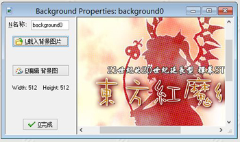

要在游戏中创建一个背景资源，请点击资源菜单中的背景或工具栏上的相应按钮。

左上角显示的是背景的名称，建议给背景起一个好记的名字。
点击载入背景按钮导入背景， 这时会弹出一个文件选择框让你选择文件。在右边你会看到预览动画和一些相关信息。在这里，您还可以设置，是否使精灵不透明（即，删除任何透明的部分），是否去除背景色使其透明（默认），以及是否平滑边缘以提高精灵美观度。直到你觉得看着舒服了以后，按打开载入背景。Game Maker支持许多图片格式，但背景不支持动画。
点击按钮编辑背景对背景进行修改，或制作一个新背景。有关如何使用图像编辑器，请看编辑图像.
不要使用过大的背景，一些旧显卡无法处理大于屏幕的图像，所以最好让你的背景图片小于1024x1024。